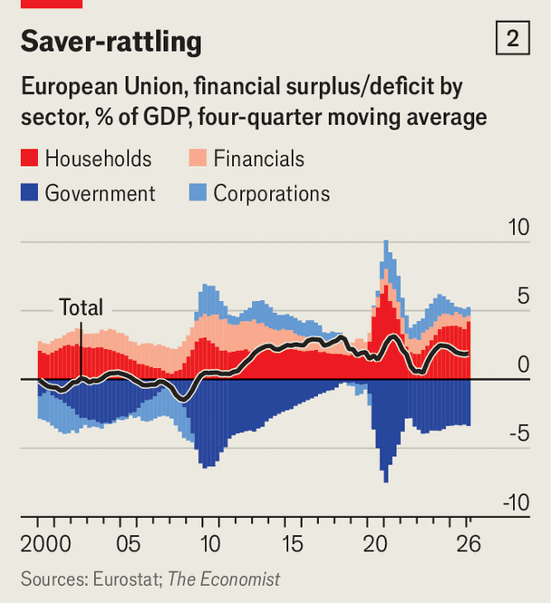

Europe’s bond markets are suffering a post-holiday shock
Reasons for rising yields differ somewhat from those in America, but are no less problematic
Sep 3rd 2026
INVESTORS INTERESTED in euro-zone government bonds face peculiar challenges. They have 21 countries to choose from, in addition to the EU’s own debt. Long holidays, including from trading desks, typically mean choppy markets during the summer. And for mysterious reasons, yields on ten-year German bunds, the bloc’s benchmark, tend to rise by 0.15 percentage points after August.

This year they started early, and not just in Germany. In recent weeks global bond markets have been febrile (see chart 1). Yields have jumped just about everywhere as investors have sold off government debt (whose price falls as yields rise), spooked by rising inflation risk, uncertainty about economic growth and zero appetite for belt-tightening. On September 1st yields on Japan’s ten-year bonds hit 3% for the first time in 30 years. American 30-year Treasuries are not far off their 19-year high of 5.31% reached in mid-August. Equivalent British gilts, which now offer a 5.9% return, have not been this cheap since 1998.
Europe is not quite there yet. Ten- and 30-year bunds continue to yield considerably less than at the last peak in 2008. Similar French bonds are no higher than back then. Still, European government issuers face peculiar challenges of their own.
Inflation is problem one. In contrast to America, where rising prices chiefly reflect strong domestic demand, the culprit in Europe is on the supply side, and out of policymakers’ control: the energy shock from the Iran war. Markets expect the European Central Bank (ECB) to raise its benchmark interest rate to 2.9% by mid-2027, up from 2% before America and Israel attacked Iran in late February.
Moreover, when inflation risk is high and stems from a supply shock, investors demand extra compensation for holding longer-term securities. In part, that is because they expect a premium for taking on inflationary uncertainty. It is also because in a supply shock, bonds and stocks tend to sell off together rather than move in opposite directions. This makes debt a less attractive way to diversify a portfolio, so yields must rise to draw buyers.
Europe’s second challenge is fiscal. Germany’s newfound love of debt-funded investment and persistent French profligacy have pushed interest rates up since 2025. This in turn has raised debt-servicing costs. In 2028 France will spend 6% of government revenue to redeem coupons, compared with 3% in 2019, estimates Fitch, a credit-rating agency. For Italy this will climb from 7% to 8.8% in the same period.
Because European taxes are much higher than in America as a share of GDP, raising them further to fill the fiscal gap is hard. Cutting spending is politically unpalatable, especially with populist insurgents on the rise across the continent.

The third problem is that aside from inflation, the rise in yields is driven by growth and investment outside Europe, which is sucking up capital. America’s economy is motoring along, helped by the building of artificial-intelligence infrastructure. The technology giants leading the charge are projected to spend over $5trn on AI data centres between 2025 and 2030. Such spending in Europe is tiny. Despite declining profits stemming partly from underinvestment, European businesses are net savers (see chart 2).
Yet even though European firms are on the sidelines of the AI race, European bond-issuers are caught up in it. The American tech titans are selling their own long-dated bonds to fund the splurge—to the tune of $250bn this year and $400bn in 2027, reckons Goldman Sachs, a bank. These rich corporate issuers are as creditworthy as governments, and so compete with them for investors’ money. They are responsible for almost a tenth of euro-denominated corporate-bond issuance this year, according to the ECB.
More debt globally means lots of long-term bonds. This leaves investors to absorb more “duration risk” (a change in a bond’s price in response to a change in interest rates). In Europe supply is even higher because the ECB is running down its holdings, by €1.2trn since 2022 and counting. At the same time, demand from big buyers is softening. Pension funds which bought long-dated debt to fund defined-benefit retirement schemes are switching to defined-contribution plans that try to boost returns with riskier assets like stocks. Investors stepping into their place, like hedge funds, drive a harder bargain.
“We are in a new global macro regime,” sums up Freya Beamish of TS Lombard, a research firm. In other words, don’t expect yields to come down soon. Borrowers had better get used to it.■